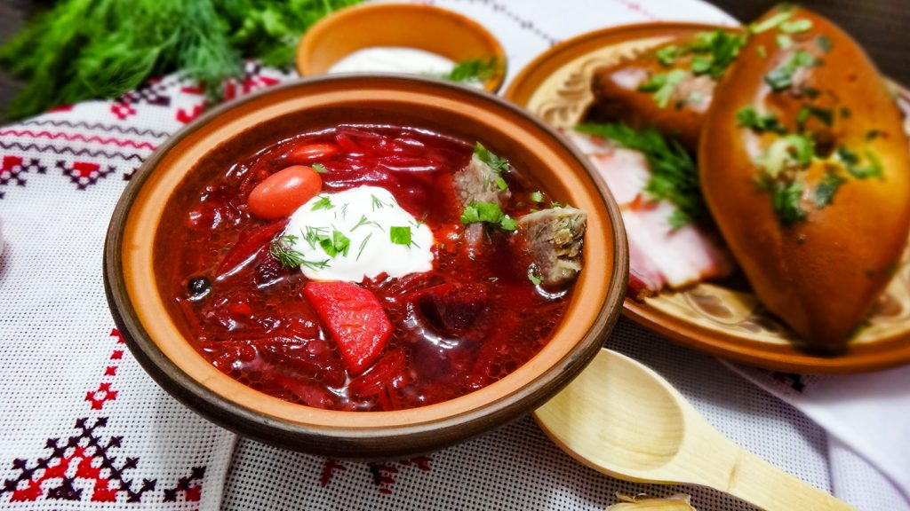

Borscht

My friend's mother from Ukraine taught me this recipe for the classic
beet soup. It's as authentic as it gets. Usually served witn dour cream and pampushcas.
It can be served vegetarian-style by omitting the sausage.
Ingridients
- 1 (16 ounce) package pork sausage
- 3 medium beets, peeled and shredded
- 3 carrots, peeled and shredded
- 3 medium baking potatoes, peeled and cubed
- 1 tablespoon vegetable oil
- 1 medium onion, chopped
- 1 (6 ounce) can tomato paste
- ¾ cup water
- ½ medium head cabbage, cored and shredded
- 1 (8 ounce) can diced tomatoes, drained
- 3 cloves garlic, minced
- salt and pepper to taste
- 1 teaspoon white sugar, or to taste
- ½ cup sour cream, for topping
- 1 tablespoon chopped fresh parsley for garnish
Directions
- Crumble the sausage (if using) into a skillet over medium-high heat. Cook and stir until no longer
pink. Remove from the heat and set aside.
- Fill a large pot halfway with water(about 2 quarts), and bring to a boil. Add the sausage, and cover
the pot. Return to a boil. Add the beets, and cook until they have lost their color. Add the carrots
and potatoes, and cook until tender, about 15 minutes. Add the cabbage, and the can of diced
tomatoes.
- Heat the oil in a skillet over medium heat. Add the onion, and cook until tender. Stir in the tomato
paste and water until well blended. Transfer to the pot. Add the raw garlic to the soup, cover and
turn off the heat. Let stand for 5 minutes.
Taste, and season with salt, pepper and sugar.
- Ladle into serving bowls, and garnish with sour cream, if desired, and fresh parsley.
Back